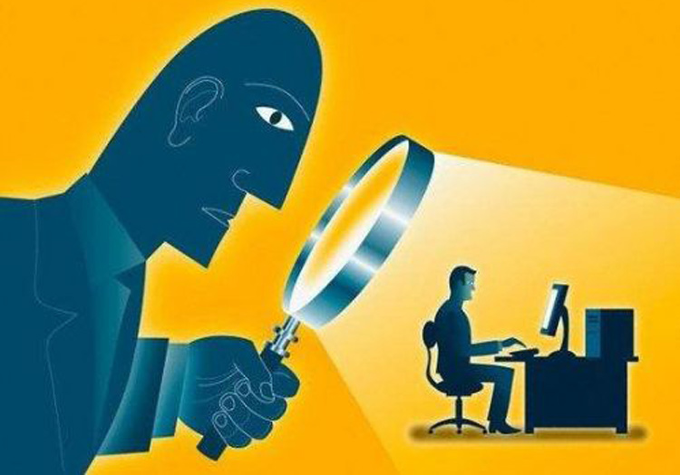

加爸爸妈妈微信好友之后，朋友圈通常会发生一次剧烈的反应，“跟基友喝酒到深夜，战绩不菲啊”通常会变成“从今天起，一定要更努力的工作，争取早日升职加薪、迎娶白富美、踏上我人生的巅峰”……如果非要把这个变化用图像表达出来的话，应该是下面这个样子：
从左边这样一个活（fang）泼（dang）的少年，变成了右侧这幅羞涩的模样，小编不禁感叹，没有秘密的人生啊，让我怎么办！
被父母知晓秘密最多是有些尴尬，你想过自己所有的信息都不是秘密吗？你去过哪、吃了什么、什么时间跟什么人通了电话、你的性别、年龄……统统都细思极恐啊有没有！社交媒网络及社交工具的发展，塑造了我们的使用习惯和偏好，这些习惯和偏好又都以数据的形式被收集起来。在这个过程中，我们被工具影响着，同时我们的隐私也一点一点被泄露了出去。
2014年央视曾报道苹果公司iOS系统会记录用户曾去过的地点，有泄露用户隐私的可能。报道称，在系统数据文件中记录用户位置的日志文件并没加密，以明文形式存在，并且即便关闭常去地点功能，依然有记录的可能。花样层出的社交软件的诞生，降低了信息泄漏的门槛，简单来说就是，你根本没什么秘密！
《2015年中国互联网社交和移动数据报告》显示，目前中国6.69亿的互联网用户中，社交媒体用户为6.59亿。凯度2015年发布的《中国社交媒体影响报告》则提到，37.7%的社交媒体用户为城市九零后。这些数据在我们每天的生活中得到了有力的印证——早上起床后打开手机查看未读消息，随手翻阅一下朋友动态，看看微博和新闻软件，该点赞的点赞、该回复的回复……这似乎已经成为了我们的生活习惯。
大数据时代没有秘密，手机定位会自动给你推荐附近吃喝玩乐的最佳去处，淘宝会展示你最喜欢的那种风格……在享受便利的同时，人们也开始抵触信息的泄漏。为了提升对隐私和数据的保护，2007年美国、加拿大和欧盟等国成立了“数据保护日”。后来，保护隐私成为了全球共识，每年的1月28日是国际数据隐私日，各国都在为信息安全而努力。
1、每年的1月28日是国际数据隐私日，这一节日的设立是为了提升对隐私和数据的保护；
2、任何事情都有两面性，享受大数据带来的便利的同时，要适当降低对“隐私”的要求。